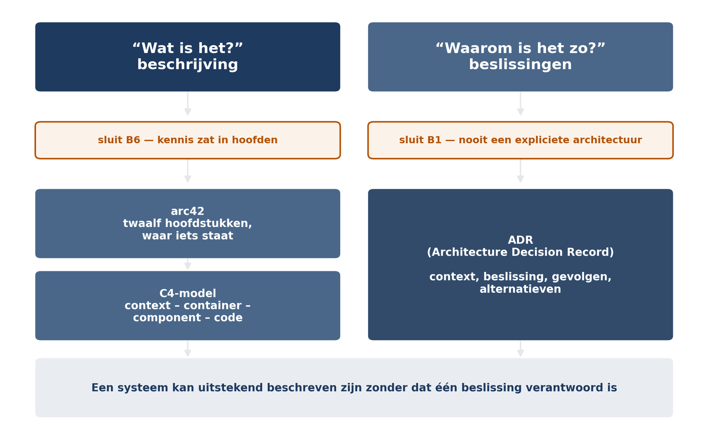

Deel 7 — Architectuurdocumentatie
Slidedeck · 32 slides · dagdeel van 4 uur inclusief opdrachten
Cursus Softwarearchitectuur · Niveau 1 (CPSA-F) · Deel 7 van 10
Slide 1 — titel
Architectuurdocumentatie Niveau 1 · Deel 7 — arc42, C4, ADR’s Sluit bevinding B1 en B6
Slide 2 — bullets
Twee bevindingen, één deel
- B6 — kennis zat in hoofden. Vertrek leadontwikkelaar maand 9 → zes weken stilstand
- B1 — geen expliciete architectuur. Beslissingen in standups en pull requests
- Ze horen bij elkaar. Ze zijn niet hetzelfde.
Slide 3 — statement
B6 gaat over wát het systeem is. B1 gaat over wáárom het zo is. Een systeem kan uitstekend beschreven zijn zonder dat één beslissing verantwoord is.
Slide 4 — figuur

Slide 5 — tabel
Vier lezers, vier vragen
| Lezer | Vraag |
|---|---|
| Nieuwe ontwikkelaar | waar moet ik zijn? |
| Beheer | wat draait waar, en bij storing? |
| Architect | waarom zo, mag ik dit wijzigen? |
| Toetsende partij | voldoet dit, kunt u het aantonen? |
Slide 6 — statement
Bij elk stuk tekst: wie leest dit, en welke beslissing neemt hij ermee? Wat op geen van beide een antwoord heeft, kan weg.
Slide 7 — opdracht
Opdracht 7.1 — Wat had de vervanger nodig gehad? 23 items uit het overdrachtsverslag, verdeeld over B6 en B1. Individueel, 20 minuten. En: was er iets dat géén enkel document had kunnen afdekken?
Slide 8 — sectie
arc42
Slide 9 — tabel
Twaalf hoofdstukken — een indeling, geen methode | 1 Eisen en drijfveren | 7 Verdelingszicht | | 2 Randvoorwaarden | 8 Cross-cutting concepten | | 3 Context en afbakening | 9 Beslissingen | | 4 Oplossingsstrategie | 10 Kwaliteitseisen | | 5 Bouwstenenzicht | 11 Risico’s en schuld | | 6 Looptijdzicht | 12 Begrippenlijst |
Slide 10 — bullets
De drie met de meeste waarde — tegen de intuïtie in
- H4 Oplossingsstrategie — één pagina, het meest gelezen en minst geschreven
- H12 Begrippenlijst — tegen semantische koppeling helpt geen structuur, alleen taal
- H11 Risico’s en schuld — het eerlijkheidshoofdstuk
Slide 11 — statement
Peildatum · ingangsdatum · verwerkingsdatum · boekingsdatum In een pensioenomgeving is hoofdstuk 12 geen bijlage maar kernmateriaal.
Slide 12 — bullets
Wat u overslaat, laat u leeg staan — met een reden
- Leeg hoofdstuk met “niet van toepassing omdat…” = informatie
- Weggelaten hoofdstuk = een gat
- Voor een klein systeem volstaan 1, 3, 4, 5, 9 en 12
Slide 13 — opdracht
Opdracht 7.2 — Schrijf de oplossingsstrategie Eén A4. Geen diagram. Leesbaar op dag één. Duo’s, 30 minuten — daarna ruilen. Toets van uw buurman: weet u nu waar u begint bij een nieuwe mutatiesoort?
Slide 14 — sectie
Het C4-model
Slide 15 — bullets
Vier niveaus — scheidt abstractie
- Context — het systeem als één blok, met gebruikers en buursystemen
- Container — afzonderlijk uitvoerbare of opslagbare eenheden
- Component — de bouwstenen binnen een container
- Code — vrijwel nooit tekenen; veroudert dagelijks
Slide 16 — statement
Op containerniveau wordt de distributiekeuze zichtbaar. Elf containers of drie. Op contextniveau zien beide systemen er identiek uit.
Slide 17 — bullets
Twee zichten die u vrijwel altijd nodig hebt
- Dynamisch zicht — samenwerking in de tijd, per scenario. Hier worden de tactieken uit deel 6 zichtbaar
- Verdelingszicht — wat draait waar Regel: één diagram per vraag die iemand daadwerkelijk stelt
Slide 18 — bullets
Wat een diagram goed maakt
- Eén abstractieniveau — de meest voorkomende fout
- Een legenda — anders leest ieder zijn eigen betekenis
- Betekenisvolle pijlen — aanroep? afhankelijkheid? gebeurtenis?
- Een titel die de vraag benoemt — niet “Architectuur”
- Beperkt aantal elementen — splitsen is beter dan verkleinen
Slide 19 — opdracht
Opdracht 7.4 — Diagramfouten opsporen Vier diagrammen, minstens twee fouten elk. Individueel, 15 minuten. Welk is het gevaarlijkst — niet het lelijkst?
Slide 20 — statement
Het gevaarlijkste diagram is het netste. Een rommelig diagram wordt gewantrouwd. Een verzorgd diagram wordt geloofd.
Slide 21 — opdracht
Opdracht 7.3 — Teken C4 voor Mutatie 2.0 Context, container, component, en één dynamisch zicht. Groepen van vier, 40 minuten. e) Leg uw containerniveau naast het deploybeeld van 1.0. Waar is dat verschil besloten?
Slide 22 — sectie
De ADR
Slide 23 — bullets
Zeven onderdelen
- Titel · status · datum en betrokkenen
- Context — de situatie, de eisen. Geen oplossing
- Beslissing — actief: “wij doen X”
- Gevolgen — wat beter, wat slechter, en voor wie
- Alternatieven — wat is nog meer overwogen, en waarom afgevallen
Slide 24 — statement
“Lokale cache voor performance.” Dat is de beslissing zonder context. Daarom kon niemand later beoordelen of zij nog klopte.
Slide 25 — bullets
De alternatieven doen het werk
- Zonder alternatieven weet een lezer niet of er is nagedacht
- Met alternatieven weet hij welke opties al zijn afgewogen — en op welke gronden
- Dat bespaart hem het opnieuw voeren van een gesprek dat al gevoerd is
Slide 26 — statement
Een aanvaarde ADR wijzigt u niet. U vervangt hem. De geschiedenis van uw beslissingen is zelf informatie.
Slide 27 — bullets
Hoeveel?
- Bij elke beslissing die twee of meer keer “ja” scoort op het criterium uit deel 1
- Voor een systeem als Mutatie 2.0: twintig tot veertig over de looptijd
- Niet honderden — en niet drie
Slide 28 — opdracht
Opdracht 7.5 — Schrijf drie ADR’s Distributiekeuze · vastlegging in gebeurtenissen · één naar keuze. Duo’s, 40 minuten. Bij de derde: waarom zou een opvolger hem willen terugdraaien — en voorkomt uw ADR dat?
Slide 29 — bullets
Documentatie die niet veroudert
- Genereren wat te genereren is
- Schrijven op het niveau dat stabiel is — kost niets, is een schrijfkeuze
- Bij de code houden, in dezelfde versiebeheerlijn
- Een moment waarop iemand kijkt — de zwakste, en de enige die het waarom raakt
Slide 30 — statement
Alles beschrijven is de belangrijkste oorzaak van verouderde documentatie. Hoe meer u beschrijft, hoe meer er kan verouderen — en hoe minder er wordt gelezen.
Slide 31 — bullets
B1 en B6 gesloten — en wat het niet oplost
- Documentatie maakt een verkeerde beslissing niet goed. Zij maakt haar herkenbaar en herzienbaar
- Zes verloren weken waren met vijftien pagina’s waarschijnlijk twee geweest
- Sprint 4 was met een ADR onderwerp van gesprek geweest — vóór een jaar werk
Slide 32 — bullets
Huiswerk en vooruitblik
- 7.7c — zoek een beslissing zonder motivering in uw eigen systeem en schrijf er alsnog een ADR over. Nuttigste opdracht van dit deel
- 7.8 — capstonedossier: B1 en B6 apart; plus de overdrachtstoets
- Deel 8: cross-cutting concepten. Sluit B7
Ductus B.V. · Cursus Softwarearchitectuur · Niveau 1, deel 7 · Slidedeck